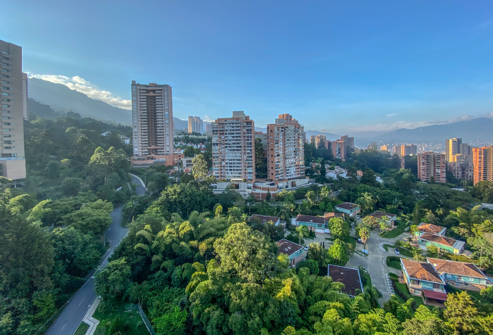

MEDELLIN

Medellín es la capital de la provincia montañosa de Antioquia en Colombia. Es apodada la "Ciudad de la eterna primavera" por su clima templado y alberga la famosa Feria de las Flores anual.
El moderno Metrocable conecta la ciudad con los barrios circundantes y tiene vistas del Valle de Aburrá que se encuentra debajo. Las esculturas de Fernando Botero decoran la Plaza Botero en el centro de la ciudad, mientras que el Museo de Antioquia exhibe más obras del artista colombiano
Comprar Ticket

Click en la imagen para terminar la compra
Comprar Ticket